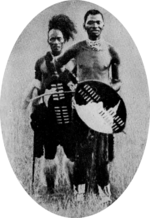

Nkosi Bhambatha kaMancinza
Chief of the AmaZondi Chieftaincy and leader of the Bhambatha Rebellion of 1906.

His bravery in leading a rebellion against the repressive laws of the colonialist government and for laying down his life for the cause of justice.
Nkosi Bhambatha ka Mancinza Zondi lived near Greytown in the Mvoti district on the Natal side of the uThukela.
Here's a time line of Nkosi Bhambatha kaMancinza:
- Birth place - Chief Bhambatha (sometimes spelled Bhambada) was born in Mpanza near the town of Greytown, Natal Colony. He was the son of Chief Macinga of the abakwa Zondi chieftaincy, and his mother, principal wife of Macinga, was the daughter of Chief Pakade of an important Zulu chieftaincy, the Cunu.
- Childhood - From early childhood, chief Bhambatha became renowned for his athletic skills, the use of assegais, and running. He was nicknamed Magadu meaning “one who took a duiker for his model”. His other names were kaMancinza, kaJangeni, kaMangenge, kaNomashumi, kaNondaba, and kaTetane, KaGasa.
- Coming of age - Bhambatha became his father's successor, following his death and that of Bhambatha's uncle, at the age of 25. He quickly established himself as a popular chief and earned the respect of the elders in his traditional council. However, he was occasionally in trouble with the law. He was fined for 500 pounds for cattle theft, which was repaid by his people. He also borrowed heavily from his White neighbours and failed to pay them back. As a result, he was repeatedly before the Natal courts to face various fines.
- Convicted - In 1905 he was convicted of faction fighting; a conviction that lead to a group of White people in his area trying to pressurise the Natal government into deposing him as Chief. However, the Natal government was reluctant to do so. After the introduction of the Natal Poll Tax, the Natal government suspected that he had joined other Chiefs in the region who had voiced their discontent and rejection of the tax. The magistrate of Greytown, Mr. J W Cross, summoned Chief Bhambatha to Greytown.
- Defiance - Bhambatha, fearing arrest, did not attend the meeting; instead he sent his elders to meet with him on his behalf. In the meantime, his headman Nhlonhlo openly rebelled against the tax and vowed to fight if the government attempted to collect the tax by force. Chief Bhambatha's attempt to dissuade from open rebellion failed.
- Natal government - Realising that the Natal government was determined to crush dissent and had mobilised a force under Major W J Clark of the Natal Police and 170 Natal Mounted Police to arrest him, on 11 March 1906, Chief Bhambatha fled to Zululand and was given shelter by King Dinuzulu who advised him to return to Mpanza. On his return, he learned that he was deposed and replaced with his uncle, Magwabagwaba. He took refuge at Nkandla forest. From here other chiefs and their followers joined his force and the rebellion was fought out.
- Crushed rebellion - The rebellion was crushed in June 1906 and a government spy who had managed to infiltrate his forces reportedly killed Chief Bhambatha in the forest. However, some of his loyal supporters maintained that he escaped to Mozambique and lived in hiding there until his natural death around the 1920s. However, the Natal forces asserted that the man killed in Nkandla Forest was him and the head shown to the public was also his. DNA Laboratory tests conducted from DNA extracted from a lock of hair found in one of the Natal officers' belonging failed to conclusively prove whether the hair belonged to Chief Bhambatha.
- Captured - Nkosi Bhambatha, who was in his mid-40s, was trapped, captured and subsequently executed. His 'collaborator' Sigananda, who was in his 90s, was also captured but died in custody while awaiting execution.
- Death - The death of Nkosi Bhambatha, the symbol of resistance and an inspiration to the legions of his fighters, demoralised the rebels and dampened their spirit, resulting in the end of the rebellion, which had led to the death of about 3 500 people. Nkosi Bhambatha's legendary military exploits against the formidable British army elevated his name to the realm of an icon among the multitude of oppressed South Africans. They saw in him the first sparks of the possibility for the overthrow of colonialism.
- Enduring legacy - Nkosi Bhambatha's enduring legacy pervaded the length and breadth of South Africa, goading more young South Africans into a higher resistance mode.Nkosi Bambatha Ka Mancinza Zondi's defiance of the heavy odds, resisting and then militarily taking on one of the mightiest armies in the world, reflected his imperishable yearning for freedom, for which he personally took the lead.
"Bambatha's life and achievement are testimony to the far-reaching contribution that one man's towering intellect, persistence and bravery vision can make to human peace and progress."
-- President of South Africa Cyril Ramaphosa